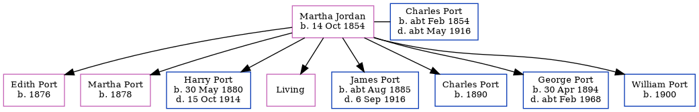

Martha Matilda Port (née Jordan) 1854 -
[ Home ] | [ Calendar ] | [ Surnames Index ] | [ Family History ]Martha Jordan, the wife of Charles Randle Port (the second cousin three-times-removed on the mother's side of Nigel Horne), was born in Canterbury, Kent, England on Oct 14, 18541,2,3,4 and married Charles (a grocer and confectioner with whom she had 8 children: Edith M, Martha E, Harry, Nellie, James Albert, Charles M, George Arthur and William C, along with 1 surviving child) at St Alphege in Canterbury on Jan 17, 18755.
Throughout her life, Martha lived in several places: at Park Terrace, Cheriton, Kent, England on Apr 5, 18911; at Enbrook Buildings in Cheriton on Mar 31, 19012; and at 83 High Street in Cheriton on Apr 2, 19113 and on Sep 29, 19394.
Children
- Edith M was born in 1876
- Martha E was born in 1878
- Harry was born on May 30, 1880
- James Albert was born c. Aug 1885
- Charles M was born in 1890
- George Arthur was born on Apr 30, 1894
- William C was born in 1900
Citations
- 1891 England, Wales & Scotland Census - Findmypast (was age 36 and the wife of the head of the household)
- 1901 England, Wales & Scotland Census - Findmypast (was age 46 and the wife of the head of the household)
- 1911 Census for England & Wales - Findmypast (was age 56 and the wife of the head of the household)
- 1939 Register - Findmypast (was the head of the household)
- England & Wales Marriages 1837-2005 - Findmypast
Media
1891 England, Wales & Scotland Census - GBC/1891/0006020448
1939 Register - TNA-R39-1724-1724E-028-33
Family Tree
Generated by ged2site. Last updated on Nov 13, 2024